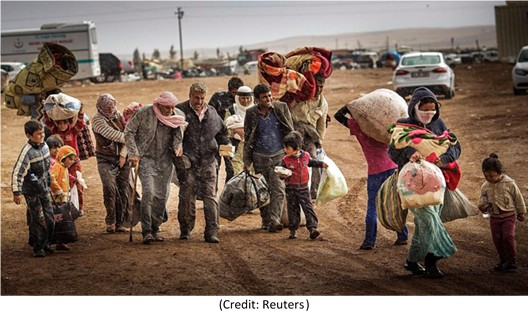
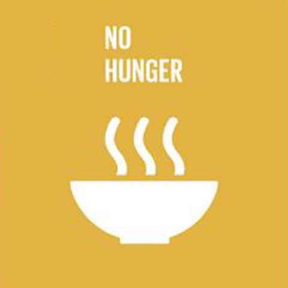

Anyone who is well versed in current affairs can say that the most imminent problem the world is facing is war. More specifically, the displaced people who lose their homes due to no fault of their own and are forced to find alternate places for their safety.
The growing list of areas affected by war and terrorism lead to a rise in the number of refugees fleeing to other countries. Due to their sheer numbers, it is impractical for social workers to keep and maintain physical records for all the refugees admitted to camps.

Concept
Our site and related application aim to simplify the procedure for refugee identification and documentation.
The proposed system includes entry of information (both data and facial image) into a centralized database accessible to all refugee camps, and enables users to search for individuals using their name or picture, implementing face recognition.

Services
Search people using face recognition. Add people using a simple phone capture. Alert relatives if a match is found. Entry of information (both data and facial image) into a centralized database accessible to all refugee camps and people.
Anyone can contribute images to this database, So finding people made easy by an single image. Search for individuals using their name or picture.
Get details of the individual ( camp, location etc.). Donation to the particular camp. Feature for nearby people who can notify nearby camps if they are willing to temporarily house refugees, If there occurs an event where the camp capacity is exceeded. To donate in monetary fashion. Or in the form of items required in the camps.
Result
The proposed system includes entry of information (both data and facial image) into a centralized database accessible to all refugee camps, and enables users to search for individuals using their name or picture, implementing facial recognition.
Also provided is a feature for nearby people who can notify nearby camps if they are willing to temporarily house refugees if there occurs an event where the camp capacity is exceeded.
Since different countries have different laws regarding the admission of refugees, we also make it possible to display the related rules according to the country from which the site is accessed.
It is also possible for kind hearted philanthropists to donate in monetary fashion, or in the form of items required in the camps.